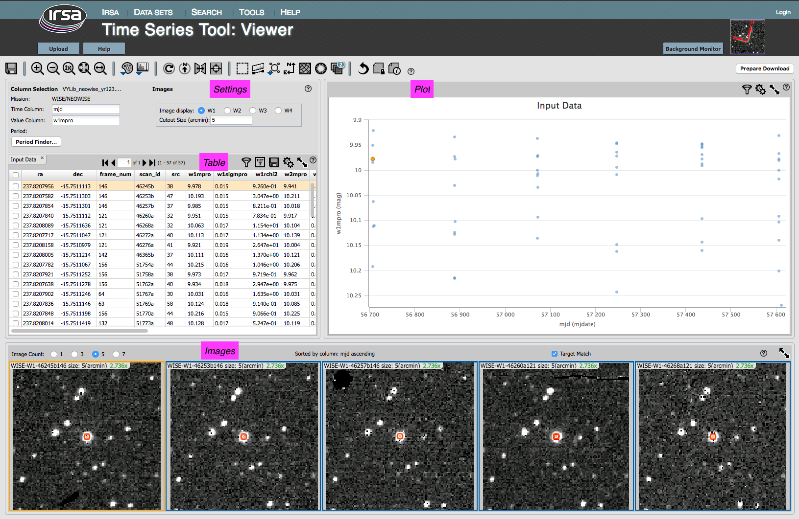

) to bring up options for the table:
) to bring up options for the table:

Contents of page/chapter:
+Settings
+Table
+Plot
+Images
The upper left starts with the file you have uploaded, followed by the mission you have selected. Then it has a place to enter the time and time-dependent column.
For WISE/NEOWISE time series, it assumes that the time column you want is "mjd", and the time-dependent variable column is "w1mpro_ep". You can change this to any of the other 3 WISE channels (w2mpro_ep, w3mpro_ep, w4mpro_ep). You can change both of these to be any other column in the catalog.
For PTF time series, it assumes that the time column you want is "obsmjd", and the time-dependent variable column is "mag_autocorr". You can change both of these to be any other column in the catalog.
If you have uploaded your own time series, you can control which columns are plotted (and eventually sent to the period-finding function) from this settings pane. If it finds a column called MJD, mjd, BJD, bjd, or really anything followed by "jd", it will assume that is your time column. It doesn't know how to assume your dependent variable column. If there is only one other column, it grabs that as the dependent variable. If you have many columns, you may need to help it realize what column should be the dependent variable.
The bottom left of this box has a button, "Period Finder", which launches period finding; see Period Finding.
The upper right of this box controls the images displayed, if the images are displayed at all.
By default, for WISE/NEOWISE time series, it displayes the W1 images at the bottom of the window (see images, below). To have different WISE images displayed (for any column in the uploaded table, not just another WISE magnitude), click on the radio buttons.
The "cutout size" controls the size of these image cutouts.
The table, if very long, is divided into 'pages' you can scroll through. You can filter and sort the table. You can control which columns are shown. For a more complete introduction to this tool's table manipulation functions, please see the Tables section.
Quick start: Sorting. Click on any column heading to sort the table by that column in ascending order; click it again to make it descending order, or click it a 3rd time to return the table to the unsorted state.
The table comes up, by default, sorted by the time column you have selected in the settings pane.
After you run Period Finding, there will be another table loaded in to this pane. See the section on main screen, after period finding.
You can change what is plotted and how it is plotted. You can add error bars. For a more complete introduction to this tool's plotting functions, please see the Plots section.
Quick start: Adding errors. To add error bars to the
plot of the light curve, click on the gears () to bring up options for the table:
From here, you can tell it which column of your catalog to use for the error bars. Note that the errors you add to this plot are for display purposes only and are not used in subsequent period finding.
"Apply" to implement your changes, "close" to exit without further changes. You can also click on the 'x' in the upper right to remove this pop-up.
The purpose of having each image from each epoch displayed is to look for any irregularities (instrumental or otherwise) on or near your target in each individual exposure.
Default view
If you have loaded in a WISE/NEOWISE or PTF time series, on the bottom of the screen there is a set of 5 images. Each of these images is centered on your target, and is of the cutout size specified in the settings pane. Note that if you change the time series to be, say, "w2mpro_ep", the images will NOT automatically change to WISE-2; you must control what images are shown by clicking the radio buttons near the words "image display" near the top of the window.
Dynamic Linking
The images are dynamically linked to the table and the plot. Click on a row of the table, and the images (and plot) change; the image in the center of the row of 5 corresponds to the table row you have selected. Click on a point in the plot, and images (and table) change; the image in the center of the row of 5 corresponds to the plot point you have selected. If you change the sort order of the table to, say, sort by brightness, then the order of the images also changes. (This will become more important after you run Period Finding.)
Image Displays
The text immediately above the images reminds you how you have sorted the table, and whether it is ascending or descending.
You can control whether 1, 3, 5, or 7 images are displayed in the sequence.
You can control the size of the image cutouts in the settings box on the top left.
The upper left corner of each image reminds you which survey, channel, exposure, size, and zoom you are using.
By default, the tool loads with each image centered on your target. Some targets are on the edge of WISE exposures, so the image may not fill the entire image box for each epoch. To turn this feature off, unclick the "Target Match" box near the upper right of the images pane.
Image Interactions
When you interact with these images, you are interacting with the FITS files, so you can change the color table and stretch, measure distances, etc. For a more comprehensive introduction to this tool's image manipulations functions, please see the Visualization section.
Quick start: Changing the color table or stretch.
To change the color table, go up to the image toolbar near the top of
the window. Click on the color table icon ( ) and select a new color table from the
options presented. Similarly, for the color stretch, click on the
color stretch icon (
) and select a new color table from the
options presented. Similarly, for the color stretch, click on the
color stretch icon ( ) and select a new
color stretch from the options presented.
) and select a new
color stretch from the options presented.
Go back to loading a time series or go on to Period Finder.